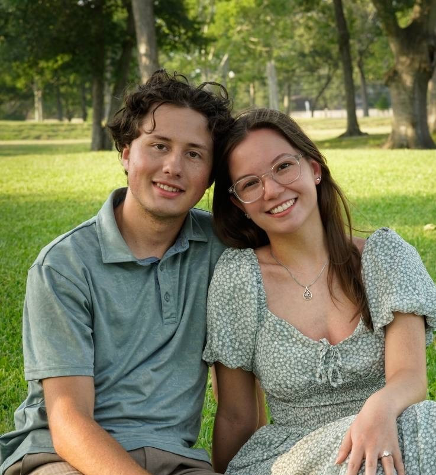

We take the Word of God into a lost and dying world,
and empower the average Christian to become an above average soulwinner.
Scroll to learn more

My name is Hugh Roth, and I have been called to serve as an evangelist sent out by Alvin Missionary Baptist Church, as director of the South-Central Outreach Bible Project. Allison and I are both extremely blessed to be called to serve the Lord together, and we are very excited to see what ministry life holds.
I surrendered to ministry at 18 years old and as I began to lean into my calling, God gave me a burden for the large amount of Christians who will never share their faith with a stranger simply because they do not feel equipped. The truth is that everyone is called to win souls for Christ, it is just a matter of how! My goal within this role is to help Christians build confidence in God's ability to use them to win others to Christ. Thank you for looking into my ministry, and if you would like to hear more about the project I would be honored to come and share the work with your church.
The South Central OBP is a ministry of Alvin Missionary Baptist Church located in Alvin, TX.
We take the scriptures into a lost and dying world, and empower the average Christian to become an above average soulwinner.
This mission drives everything we do. We believe that scripture distribution is not just about putting Bibles in people's hands—it's about equipping believers to confidently share the Gospel message that those scriptures contain. We all have been given different gifts, talents, and perspectives, all of which we are called to use for kingdom work! Through scripture distribution, public evangelism, and OBP training, you will be better equipped to share Christ using the gifts, talents, and circumstances God has given you.
Our ministry operates in many ways, but below are the two main ways we orchestrate outreach events. If you have opportunity for community outreach in your area, please reach out to me and I would be honored to come present the work and discover how we can help serve your community.
We partner with churches in their communities to host evangelism outreaches and equip their members for effective Gospel sharing. This includes:
We travel to major sporting events like the Olympics, and Super Bowl to distribute scriptures and train Christians using public evangelism. These events provide:
Every large scale event is designed to equip you to share the Gospel, however we do not simply throw you in a classroom... Brother David Hardin likes to say we get you out of your seats and into the streets. Below are three major components of each outreach event.
We begin each event with an Orientation to the event which prepares you for outreach. The scale of this orientation depends on the event, however you can expect to be a part of the following:
Participants immediately put their learning into practice through hands-on evangelism:
Each day concludes with a time of reflection and encouragement:
As you already know, our goal here at the Outreach Bible Project is to bring the Word of God into a lost and dying world and empower the average Christian to become an above average soulwinner, but I would like to share a little bit about my specific burdens when it comes to evangelism.
What I do:
As mentioned before, I have a deep burden for those who have the light of God and are deceived into not sharing that light with the lost world we inhabit, and because of this, my priority when it comes to the Outreach Bible Project is not simply handing out scriptures but to create a culture that is centered around growth, encouragement, and accountability that bleeds into the churches we work with. The Outreach Bible Project is not just to give you the opportunity to share your faith, but to bring what you learn back into the town God has placed you. The biggest and most exciting way your church can partner with us is to let Allison and I come do outreach with you! All of that being said, My priority is in creating culture and training within the Outreach Bible Project and I also am blessed to be the media guy! I get to run around with a camera, create our graphics, logos, and designs. I am beyond thankful to be a part of this ministry and I pray you will join us whether it be in another country or in your own community!